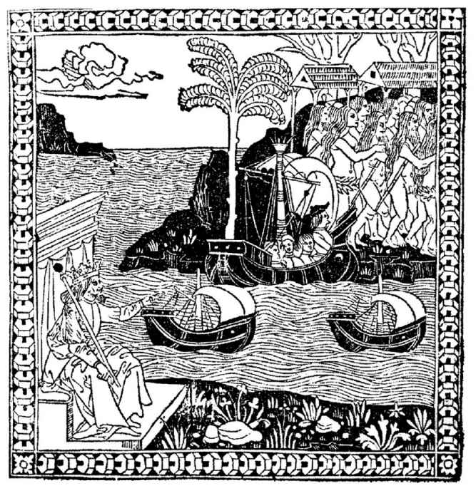
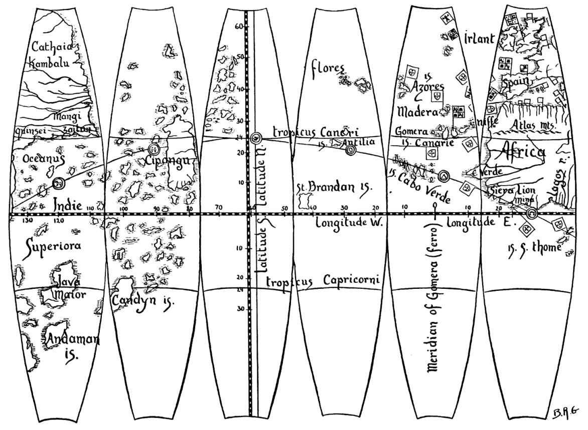

如果考虑到葡萄牙在远洋航海理论和实践方面所做的开创性工作，第一个伟大发现即美洲大陆的发现乃在西班牙的赞助下取得，这似乎是悖谬的。而似乎更悖谬的是，取得这一成果的原因竟在于，葡萄牙人在地理知识方面比西班牙人更先进，并正确地估计出哥伦布的计算结果是错的。15世纪有知识的人都知道地球是圆的。问题不在于地球的形状，而在于它的大小以及大陆对海洋的确切关系。哥伦布的估计根据几个来源：（1）根据马可·波罗对亚洲东西宽度的估计（一个过高的估计）；（2）根据波罗关于日本距亚洲大陆有1500英里的报告（一个极度的过高估计）；（3）根据托勒密对地球周长的估计（一个过低的估计），推断出分隔欧洲和日本的海洋宽度不到3000英里。因此，他认为前往亚洲的最便捷之路是横渡大西洋的短期航行；这也是他向各宫廷提出的方案。葡萄牙人由于亨利王子而富有较多实践经验，并较好地掌握了当时最先进的知识。他们确信地球比哥伦布所认为的还大，诸海洋也更宽，前往东方的最近便之路是绕过非洲而不是横越大西洋。为此，1484年哥伦布向葡萄牙国王请求资助时，遭到拒绝。两年后，哥伦布来到西班牙宫廷，起初也遭到拒绝，但最后赢得了伊莎贝拉女王的支持。

图146 这幅木雕最先出现在1493年印制的一本小册子的封面上，它可能是欧洲第一幅描绘哥伦布到达美洲的画作。图中，西班牙国王斐迪南坐在左边，正指挥哥伦布和他的三艘船驶向一个小岛。几乎全裸的土著（画得比欧洲人身材高大）见有外族人出现，似乎正纷纷逃离。
1492年8月3日，哥伦布率领由可靠的水手和经验丰富的能干船员操纵的三艘帆船，从帕洛斯起航。10月中旬，他登上了巴哈马群岛中的一个小岛，哥伦布将它命名为圣萨尔瓦多。世界历史的最大嘲弄之一是，哥伦布至死还确信，他已抵达亚洲。他确信圣萨尔瓦多岛离日本所在的位置非常近，下一步就是找到日本。当他向西南航行抵达美洲大陆时，他相信自己到了马六甲海峡附近某地。哥伦布坚持自己的错觉这一点，带来了重大结果：它鼓舞人们进一步勘探美洲，直到在墨西哥和秘鲁发现大笔财富。
哥伦布发现美洲大陆
在结束第一次航行回来后，哥伦布在给加布热沃·桑切斯的信（1493年3月）中描述了他的发现。这封信表明，哥伦布是多么急切地想说服人们，他已经发现了宝贵的土地，他准备掠夺这些土地上的财富，并将这里“诚实”而又热情的人们变为奴隶。*
我知道，您听到我圆满完成任务的消息一定会很高兴，因此，我决定给您写这封信，告诉您我在这次航行中所做的一切和所发现的情况。
在离开卡迪兹后的第33天，我进入了印度海，在那里，我发现了许多岛屿，居住着不计其数的居民。我展开国王的旗帜，公开宣布替我们最幸运的国王占领了所有这些岛屿，岛上的居民无人反抗……在这座岛上和其他所有我见到的或知道的岛上居住的男男女女，都像他们刚来到这个世上一样赤身裸体，只有少数妇女用树叶、树枝或专为自己准备的棉纱遮住部分身体。正如我前面谈到的，他们没有任何铁器，也没有武器；他们对此一窍不通。他们不会使用武器，并非因为他们身体不健全，而是因为他们生性胆小，充满恐惧。不过，他们用晒干的甘蔗作杆，一头固定着削尖的、晒干的木矛，来代替武器。但是，他们从来不敢用这些东西，因为每当我派两三个下属到当地的村庄与居民们谈话时，常常会出现这样的情况：一群印第安人（哥伦布认为他们是印度人）冲出来，但一见到我们的人要接近他们，他们就会夺路而逃，父母顾不上孩子，孩子管不了父母。他们这样做并不是因为受到了什么损失或伤害。相反，我会把我所带的东西，如衣服和许多其他东西，送给我所遇到的人或愿意和我说话的人，从不索要任何回报，但是，他们还是本能地害怕和胆怯。不过，当他们看到自己安全时，且所有的恐惧消失后，他们都非常坦率、诚实，待人也十分慷慨。如果有人问他们要东西，没有人会拒绝；相反，他们自己还会邀请我们带走他们的东西。他们对我们表现出了最大的热情，用非常珍贵的物品换取我们不值钱的东西；给他们最不值钱的东西，甚至不给他们任何东西，他们都会很高兴……
最后，如果用几句话总结我们这次出航和迅速返回的主要结果和好处，我向我们最战无不胜的君王们承诺：如果我能得到他们一些小小的援助，我将把他们想要的任何数量的黄金，还有香料、棉花、只有在希俄斯岛上才能找到的玛蒂脂，以及尽可能多的沉香木和陛下们想要的尽可能多的异教徒奴隶都奉送给他们。
……
由于这些事情已经完成，所以，我只是简短地跟您讲述一下。再会。
克里斯托弗·哥伦布
海洋舰队司令
3月14日于里斯本
* Reprinted from Old South Pamphlets, vol. 2，No. 33（Director of the Old South Work，1897）.

图147 哥伦布所了解的1492年的世界就包含在这幅由纽伦堡地理学家马丁·贝海姆所绘的地图中。贝海姆制作了世界上第一个圆形地球仪，该地球仪中的海洋部分就描绘在这幅地图中。哥伦布从加那利群岛（Canarie Islands，图的右侧第二部分）出发，他希望自己会首先登陆日本（图的左侧第二部分所标的Cipangu）。当他在圣萨尔瓦多岛登陆时，他以为自己登上了日本的外围岛屿。而当到达古巴时，他则认为自己已经到了日本。
西班牙君主坚定地支持哥伦布，投入大笔资金为他装备了另外三支远征队。但是，直到1519年，西班牙人才在墨西哥偶然地发现富裕的阿兹特克帝国。从哥伦布首次探险至这次意外的发现，时间超过四分之一世纪；在这段时间里，随西班牙人踏勘西印度群岛中看来似乎没有什么前途的无数岛屿而来的，是一次又一次的失望。哥伦布的伟大发现最初看上去像是一个重大失败。数千名冒险家成群结队地前往西印度群岛，只是令人扫兴地找到少量黄金。然而，美洲大陆的发现的确引起了具有伟大意义的直接反应，它促使葡萄牙人环航非洲，由海路直抵印度。